Indirizzo del sitohttp://10.181.100.249:3000/login
Cosa serve
Un computer (non il telefono) con Chrome o Firefox.
Il vostro nome utente e la vostra password: il nome utente è scritto in fondo a questa guida (pagina «I vostri account»); la password vi viene mandata separatamente su WhatsApp.
Come leggere le immagini
Nelle schermate di questa guida i riquadri rossi indicano dove cliccare o cosa guardare.
Una bozza salvata non si può modificare
Se c'è un errore, eliminatela (bottone Elimina) e rifatela. Per non perdere lavoro, scrivete prima i testi lunghi (commento, bibliografia, mostre…) in un file Word e poi copiateli e incollateli nel sito.
Indice
Entrare nel sito
Il menu
Creare una scheda
Inviare la scheda all'amministratore
Approvare, rifiutare o eliminare (solo amministratore)
In Nome utente scrivete il vostro (lo trovate in fondo alla guida).
In Password scrivete la password ricevuta su WhatsApp, identica: maiuscole e minuscole contano, niente spazi.
Premete Accedi. Si apre la "Pagina di ricerca": siete dentro.
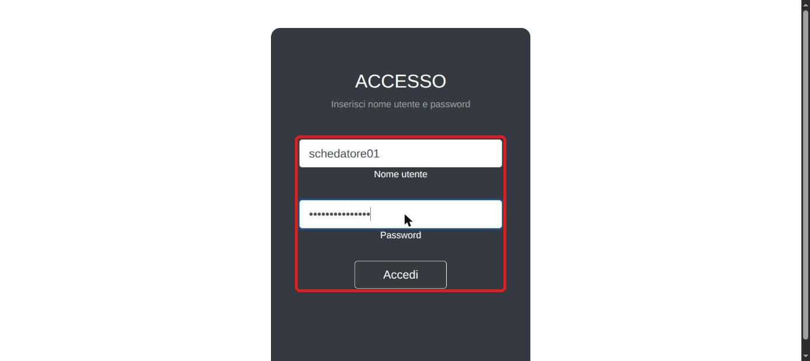
La pagina di accesso.
Se la password è sbagliata compare un riquadro rosso. Ricontrollatela lettera per lettera e riprovate.
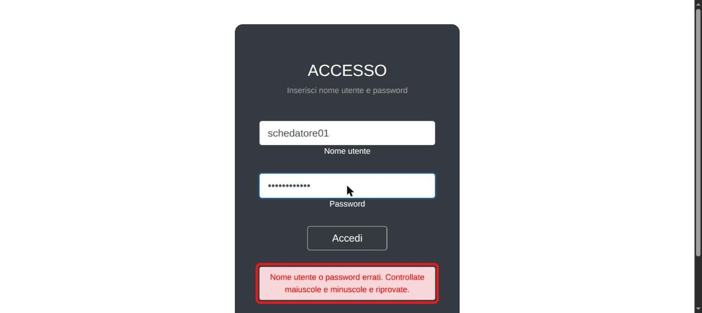
Il messaggio in caso di nome utente o password errati.
2. Il menu
In alto a sinistra in ogni pagina c'è il simbolo ☰ (tre righe). Cliccandolo si apre un menu scuro sulla sinistra.
Chi scheda vede
Chi approva vede
Logout Schedatore ▾ (cliccateci per aprirlo) – Bozze – Schede in approvazione
Logout Amministratore
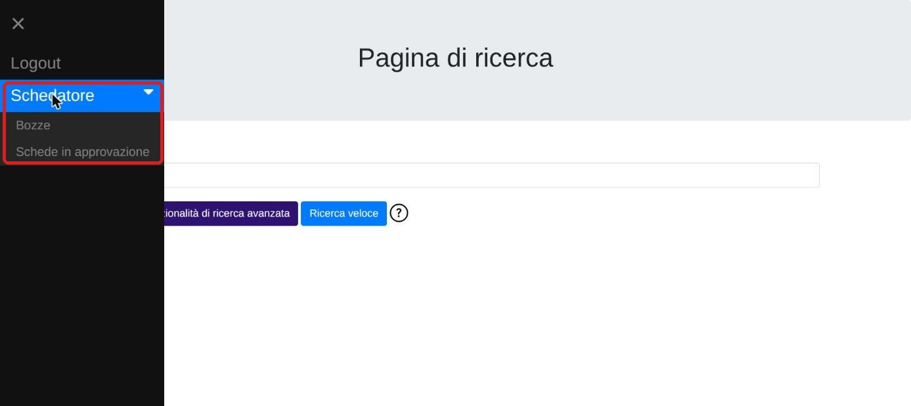
Il menu di chi scheda, con la voce "Schedatore" aperta.
In alcune pagine il menu mostra anche Homepage, che riporta alla pagina di ricerca.
3. Creare una scheda
Menu ☰ → Schedatore → Bozze.
Premete il bottone verde Crea una nuova bozza.
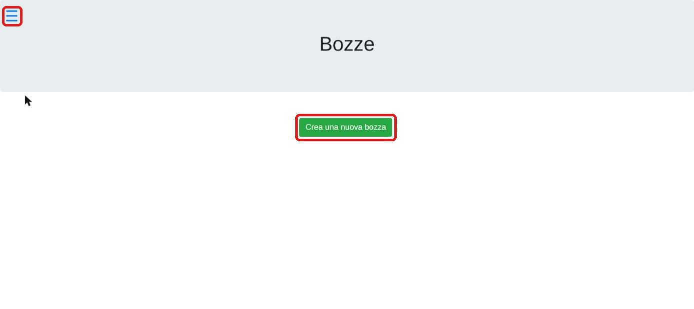
La pagina "Bozze", ancora vuota.
Si apre un modulo lungo. L'unico campo obbligatorio è "Titolo opera": il resto compilatelo se avete le informazioni. Ricordate: una volta salvata, la bozza non si può modificare (vedi prima pagina).
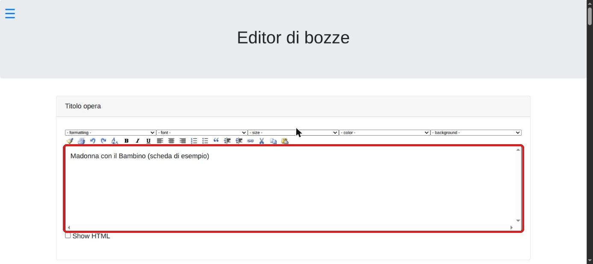
Il titolo si scrive nel riquadro bianco grande. La barra sopra serve per grassetto, corsivo, ecc.
Non spuntate "Show HTML"Sotto ogni riquadro di testo c'è la casella "Show HTML": lasciatela vuota.
Autore, materiale, tecnica: prima guardate l'elenco
Sotto ogni autore, materiale e tecnica c'è un menu Seleziona preesistente con quelli già inseriti nel sito (anche da altri).
Se c'è già: sceglietelo dal menu. I campi sopra diventano grigi: è normale.
Se non c'è: lasciate il menu su "---" e scrivetelo nei campi.
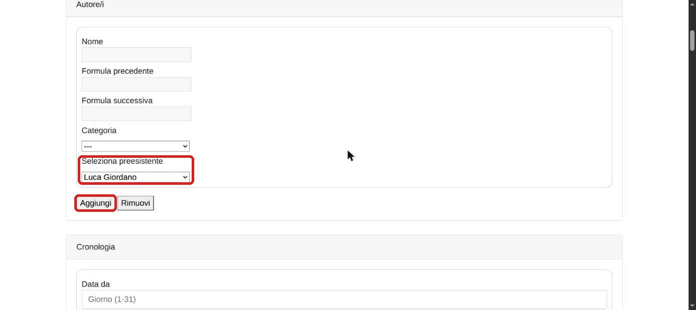
Autore scelto dall'elenco. "Aggiungi" serve per un secondo autore.
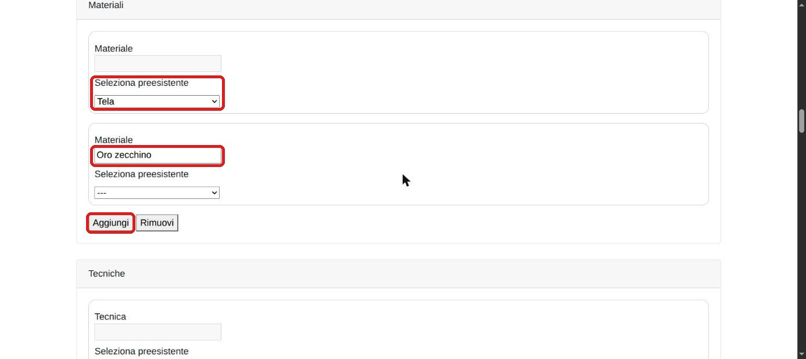
Due materiali: il primo scelto dall'elenco, il secondo scritto a mano dopo aver premuto "Aggiungi".
Perché usare l'elencoCosì la stessa cosa non finisce nel sito scritta in modi diversi (es. «Tela», «Tela dipinta», «tela (supp.)») e le ricerche funzionano meglio. Se scrivete a mano un nome che esiste già, il sito lo riconosce anche se cambiano maiuscole o accenti; non riconosce però parole in più o abbreviazioni.
Misure
Scegliete Direzione (Altezza, Larghezza…) e Unità (cm, mm…).
In Valore solo numeri. Va bene anche la virgola: 72,5.
Aggiungi misura per un'altra misura; Aggiungi gruppo misure per un altro gruppo (es. "Cornice").
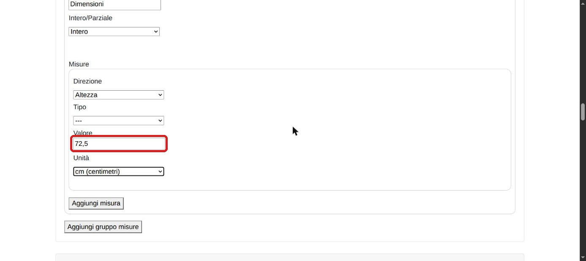
Una misura: Altezza 72,5 cm.
Immagini e salvataggio
In Immagine premete Scegli file (in alcuni computer "Choose File") e prendete la foto. La prima immagine è la copertina.
Il campo Commento in fondo potete lasciarlo vuoto.
Alla fine premete il bottone blu Salva bozza.
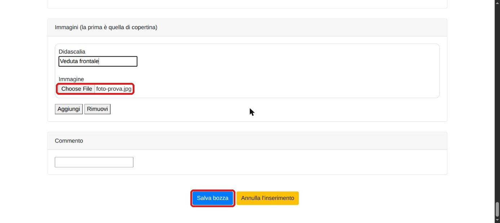
Foto caricata e bottone per salvare.
Attenzione al bottone giallo"Annulla l'inserimento" butta via tutto quello che avete scritto e non ancora salvato.
Se è andato tutto bene compare questo messaggio e la scheda finisce nella pagina Bozze. Per ora la vedete solo voi.
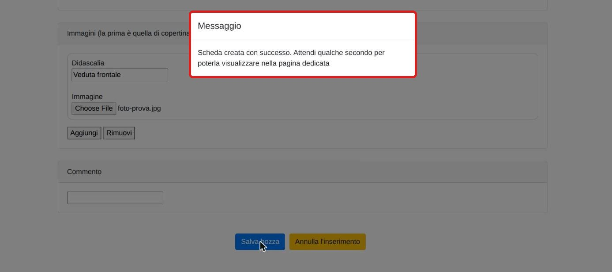
Scheda salvata.
4. Inviare la scheda all'amministratore
Menu ☰ → Schedatore → Bozze.
Sulla riga della scheda premete Invia.
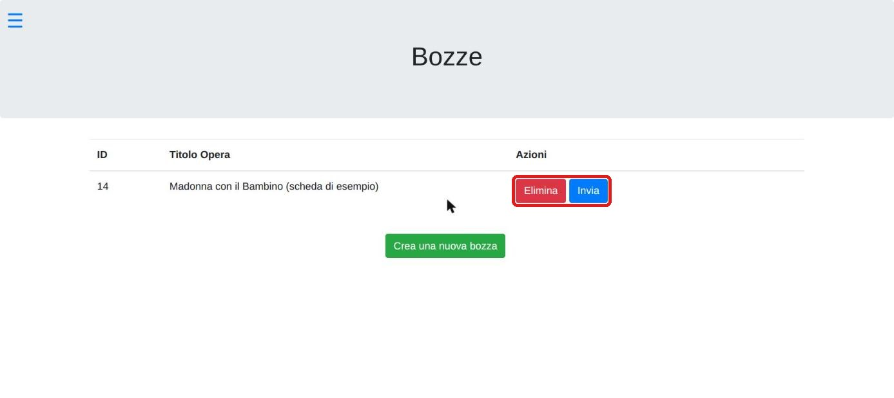
"Elimina" cancella la bozza; "Invia" la manda all'amministratore.
3. Confermate con Invia nella finestrella.
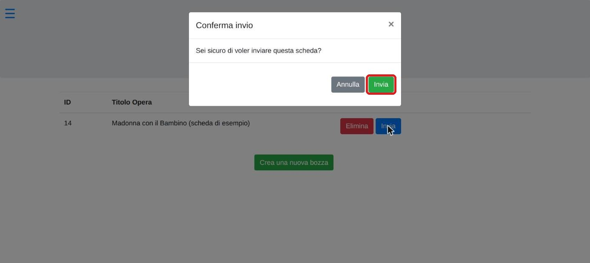
La conferma prima dell'invio.
La scheda passa in Schede in approvazione e aspetta l'amministratore. Se ci avete ripensato premete Ritira: torna tra le vostre bozze.
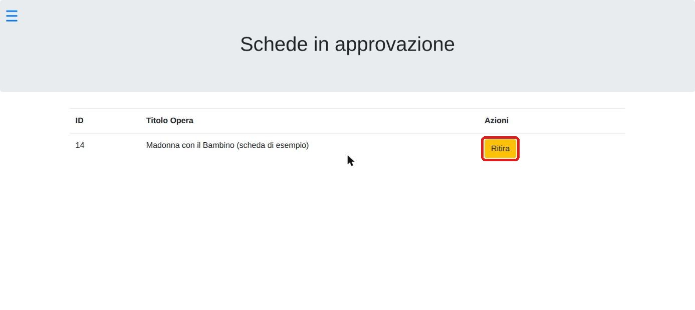
Una scheda in attesa di approvazione.
Se l'amministratore…
…la scheda
Approva
diventa pubblica: chiunque la trova nel sito.
Rigetta
torna tra le vostre Bozze. Eliminatela, rifatela con le correzioni e inviatela di nuovo.
5. Approvare, rifiutare o eliminare (solo account "amministratore")
1. Menu ☰ → Amministratore.
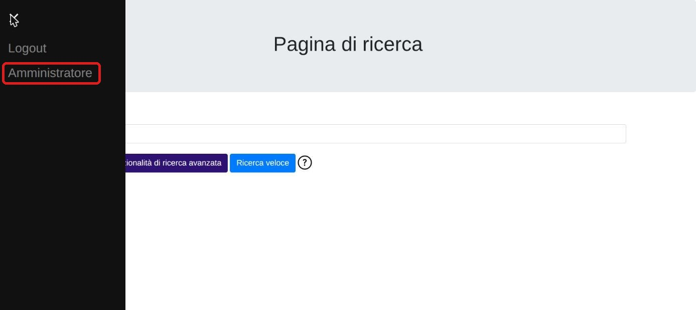
Il menu dell'amministratore.
2. Nella parte Da valutare ci sono le schede inviate dagli schedatori. Premete Visualizza per aprirne una.
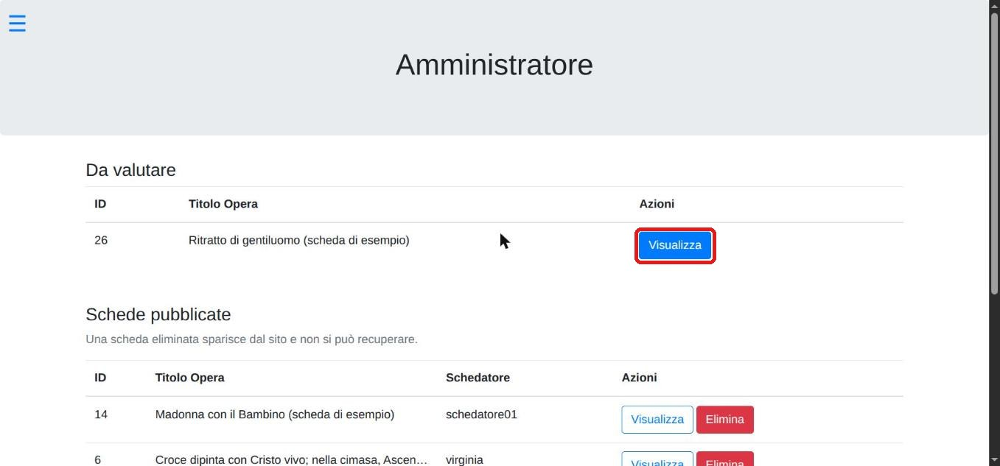
In alto le schede da valutare, sotto quelle già pubblicate.
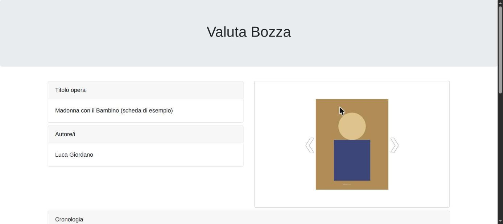
In alto: titolo, autore e immagini (con le frecce si scorrono le foto).
3. Scorrete fino in fondo. Sotto Schedatore c'è chi ha scritto la scheda. Poi:
Approva (verde): la scheda diventa pubblica.
Rigetta (rosso): la scheda torna a chi l'ha scritta.
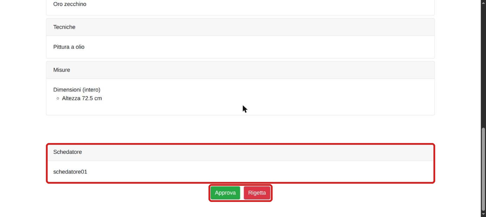
In fondo alla pagina: chi l'ha scritta e i due bottoni.
Avvisate voi lo schedatoreIl sito non manda notifiche: se rifiutate una scheda, dite voi allo schedatore (email, telefono…) cosa correggere.
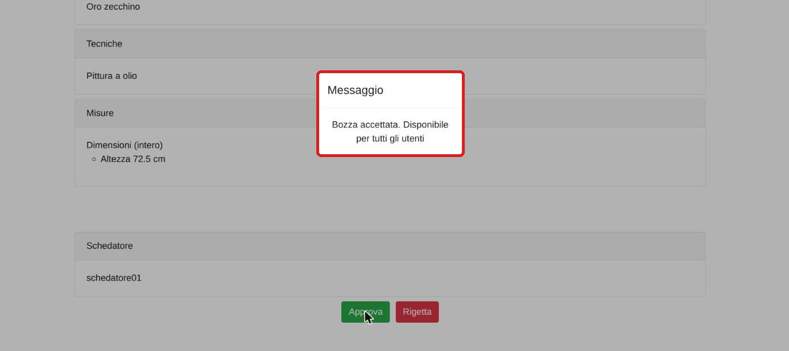
Messaggio dopo l'approvazione.
La scheda approvata, come la vedono tutti.
Eliminare una scheda già pubblicata
Se una scheda pubblicata è sbagliata o non deve più comparire nel sito:
Menu ☰ → Amministratore, poi scorrete fino a Schede pubblicate.
Con Visualizza potete aprirla per controllare che sia quella giusta.
Premete Elimina sulla sua riga.
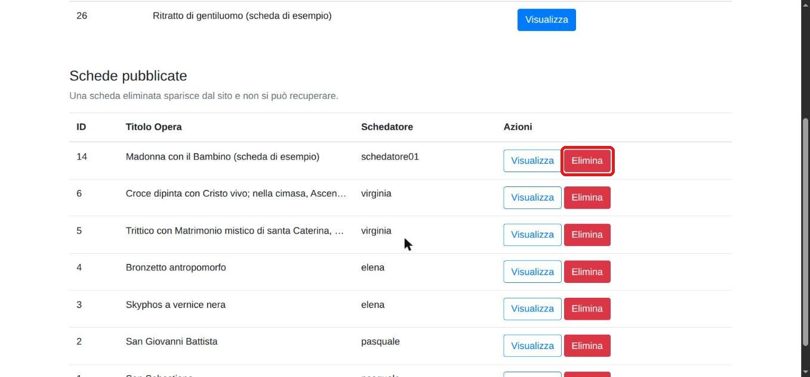
L'elenco delle schede pubblicate, con chi le ha scritte.
4. Controllate il titolo nella finestra e premete Elimina definitivamente (oppure Annulla se avete sbagliato riga).
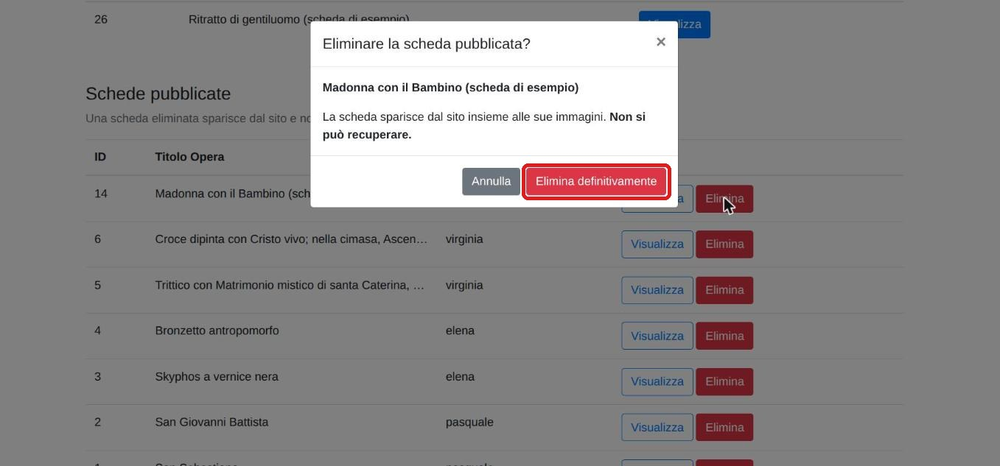
La conferma prima di eliminare.
Non si torna indietroLa scheda sparisce dal sito insieme alle sue immagini e non si può recuperare. Se va solo corretta, conviene farla rifare allo schedatore e poi eliminare quella vecchia.
6. Uscire e cosa fare se qualcosa non va
Uscire
Menu ☰ → Logout. Fatelo sempre se usate un computer condiviso.
Problemi frequenti
Cosa succede
Cosa fare
"Nome utente o password errati"
Ricopiate la password ricevuta su WhatsApp, lettera per lettera (maiuscole e minuscole contano).
"Sessione scaduta", oppure le pagine non mostrano i dati
Menu ☰ → Logout, rientrate e riprovate.
Un messaggio d'errore quando salvate
Leggetelo: di solito dice cosa correggere (es. "Il valore di una misura deve essere un numero").
Il sito non si apre
Controllate di essere sulla rete dell'università (o collegati alla VPN di ateneo).
Ho sbagliato una scheda già salvata
Bozze → Elimina, poi rifatela. Se è già in approvazione: prima "Ritira".
7. I vostri account
Ognuno usa solo il proprio nome utente: il sito registra chi ha scritto ogni scheda. Il nome a fianco serve solo a ritrovare il vostro nome utente, non va scritto nel sito.
Persona
Nome utente da scrivere nel sito
Ruolo
Virginia
schedatore01
Schedatore: crea e invia le schede
Elena
schedatore02
Schedatore: crea e invia le schede
Pasquale
schedatore03
Schedatore: crea e invia le schede
Emanuele
amministratore
Amministratore: approva o rifiuta le schede
La passwordNon è scritta in questa guida: vi viene mandata separatamente su WhatsApp. Maiuscole e minuscole contano.